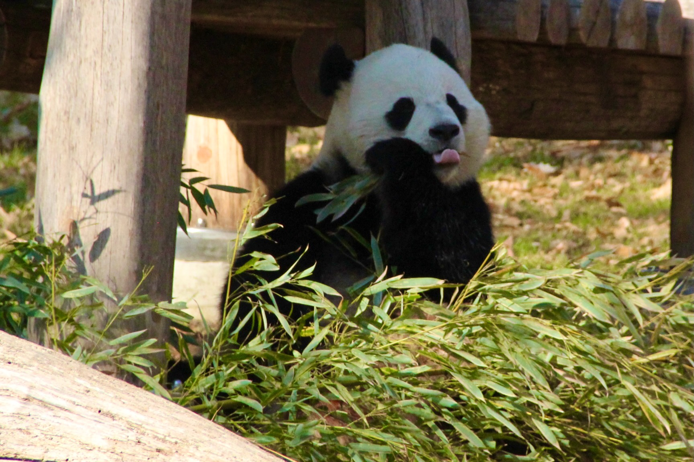

A simple site that shows my love of pandas.

Ailuropoda melanoleuca which means black and white cat-foot.
I always thought pandas were herbivores but pandas will sometimes eat small animals and fish. But main diet is bamboo.
Pandas that live in mountain areas will migrate down to warmer ranges when the winter gets too cold.
Pandas were once considered endangered and conservation efforts have helped increase the population.